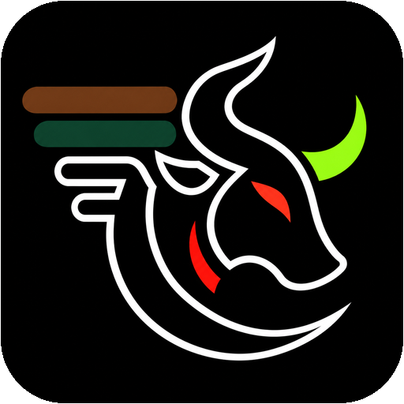

YOUR PERSONAL CAMPUS COMPANION
Good day, Tamaraw! 👋
Arrive at your classes on time.

Sign in to keep your class schedule and commute preferences online.
Your planner is stored online. Your device may remember your sign-in session. Student accounts are private from other students; the project team can review usage logs.
Arrive at your classes on time.